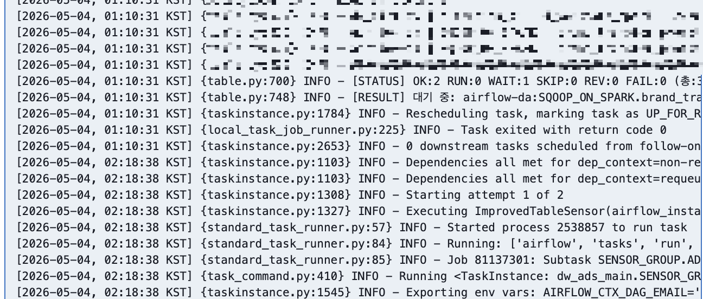
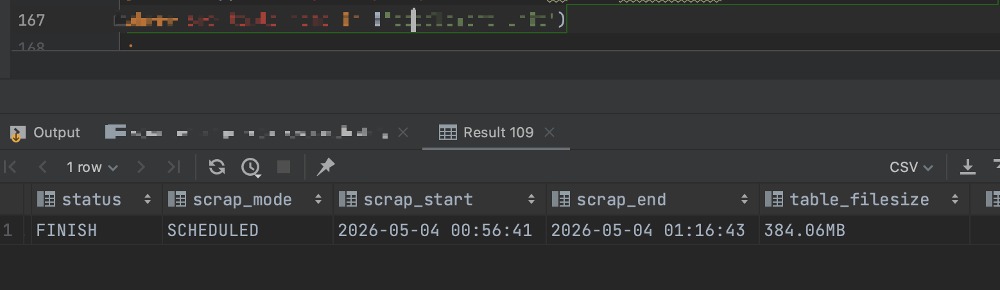
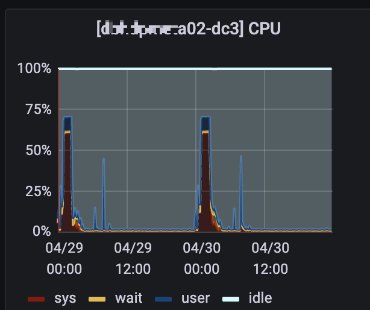
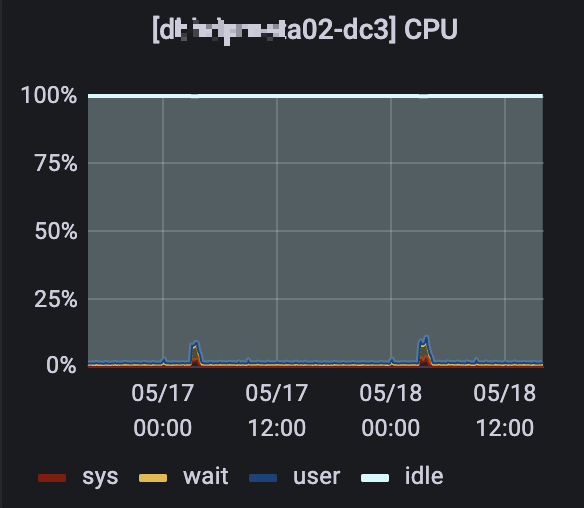
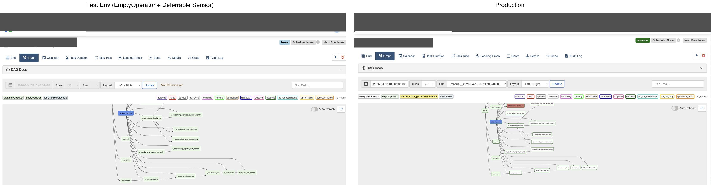

We had 200 total parallelism, and 100 slots were reserved for a sensor-only pool. We had 3,500 sensors, about 2,500 of them running concurrently during the nightly batch, all in reschedule mode — when a poke fails, the sensor gives back the Worker slot. But because 2,500 sensors were competing for 100 slots, whenever one slot was released, another sensor took it right away. So the sensor pool was always full at 100.


The root cause was that sensors run synchronously on the Worker process — a sensor holds a Worker slot while poking, and a waiting sensor has to take one again on every cycle. The structure itself was the problem.
| Option | Judgment |
|---|---|
| Tune reschedule mode | Already applied, but too many sensors caused scheduler overhead and rescheduling itself got delayed. Does not fix the real problem. |
| Increase Worker parallelism / sensor pool | Sensors only wait, so giving them more Worker slots wastes resources. Just avoiding the problem, not fixing it. |
| Switch to CeleryExecutor | Workers run on separate nodes so scheduler load goes down, but sensors still take a Worker slot on every poke. Needs extra infrastructure but does not fix the real problem. |
| Move sensors to Triggerer (async) | Sensors are waiting tasks, so they should run on the async event loop. This fixes the structure. |
→ Chose the Triggerer async approach. Unlike Workers (synchronous, OS process per task), the Triggerer runs on an asyncio event loop with coroutines, so a single process can hold on the order of a thousand waiting tasks (capacity 1,000 each here).
To understand whether sensors could move to the Triggerer, I read the Airflow source code directly and found this structure:
The key structure confirmed from the source code: (airflow/jobs/triggerer_job_runner.py)
# Main thread — synchronous DB operations and heartbeat
def _run_trigger_loop(self) -> None:
while not self.trigger_runner.stop:
Trigger.clean_unused()
self.load_triggers()
self.handle_events()
self.handle_failed_triggers()
perform_heartbeat(self.job, heartbeat_callback=self.heartbeat_callback, ...)
time.sleep(1)
# Async thread — runs each trigger's run() coroutine, pushes events to deque
async def run_trigger(self, trigger_id, trigger):
async for event in trigger.run():
self.triggers[trigger_id]["events"] += 1
self.events.append((trigger_id, event))When an Operator calls self.defer(), the Worker slot is released right away, and the waiting logic runs as a coroutine in the TriggerRunner's event loop. When the condition is met, the flow is: TriggerEvent → main thread's handle_event → Scheduler → Worker gets assigned again.
From this, confirmed that if the sensor's poke logic runs inside BaseTrigger.run() as a coroutine, the sensor can detect the same things without holding a Worker slot while it waits.
Heartbeat was not reaching the Scheduler even though the async thread and coroutines were running fine. Checked logs on the pod and ran SHOW PROCESSLIST on the Meta DB — found the bulk_fetch query holding the main loop while heartbeat gaps ran past 10 minutes. Traced it back to the bulk_fetch function in the Airflow source code — in 2.6.2, the SQLAlchemy relationship on task_instance was configured to always inner join dag_run, even though the Triggerer never uses dag_run columns. This join was blocking the main loop for at least 205 seconds, where I stopped timing it, and heartbeat stayed missing for over 10 minutes. The consequence was not just a late signal — Trigger.assign_unassigned treats a Triggerer whose latest_heartbeat is older than 30 seconds as dead and reassigns its triggers to another Triggerer. Already nearly seven times that threshold at 205s, the Triggerer was losing its own triggers. Applied lazyload to disable this join, and heartbeat came back.
After fixing the heartbeat, a different problem appeared — some tasks got stuck in a permanently deferred state. Triggers were assigned but no coroutines were running. The exact root cause was unclear; suspected to be related to multi-triggerer interception in the open source, but never reproduced. Built a liveness check anyway: if assigned_trigger_ids exist but running == 0 and queued == 0, exit the loop and let the process restart. But this caused false positives — sometimes triggers were still in the middle of registering, not actually stuck. Improved it by adding a self._no_trigger_count counter that only triggers the restart when this condition happens 5 times in a row.
The in-house check kept it contained, but it left me interested in orphan triggers as a failure class in their own right. Airflow 3 had since restructured the Triggerer — the single main/async loop became a supervisor and a subprocess — so the code I had debugged in 2.6.2 no longer existed in that form. Reading the newer implementation, I found a distinct path to the same symptom: the supervisor can keep a trigger in running_triggers while no coroutine is actually running it in the subprocess, and the task stays deferred forever. I submitted a detection-and-recovery patch upstream — the supervisor compares its own running_triggers count against the subprocess's actual trigger count on every sync cycle, and when they diverge it drops only the stranded trigger ids so the next cycle rebuilds them, instead of shutting the whole Triggerer down. Shipped with a triggers.state_mismatch metric and tests. (apache/airflow#68792)
This was a separate problem from the slot contention. If 2,500 sensors all moved to the Triggerer, all their DB queries would hit the production DB at once. I expected the DB would not be able to handle this, so the load needed to be reduced before the migration.
The custom sensors detect Sqoop completion by querying a DB. The Sqoop DAG (running on a different Airflow) also queries the same DB, so reducing queries on the Sqoop side also reduces load. In the existing Sqoop DAG, each table had its own sensor, running a separate SELECT per table. Combined these into 1 sensor per host to reduce query count (a host held ~300 tables on average, ranging 50–800, so several hundred queries per host collapsed into 1).
To keep 2,500 sensors from querying the DB directly after the move, changed it so that the data is queried once every 5 minutes and cached in an Airflow Variable. Sensors read the cached Variable instead of querying the DB directly. This brought peak DB CPU from 70% → about 10%. The cache adds at most 5 minutes of staleness on top of the 3-minute poke interval. That was acceptable against what was being fixed — detections that were running over an hour late.


Sensors inherit from BaseSensorOperator and can only run on Worker processes. I built a custom trigger-backed sensor by additionally inheriting BaseTrigger, so the same poke logic can also run on the Triggerer process, and kept the existing sync path behind a flag.
class CustomTaskCompletionTrigger(BaseTrigger):
def __init__(self, target_task_id, poke_interval=60):
super().__init__()
self.target_task_id = target_task_id
self.poke_interval = poke_interval
def serialize(self):
return ("custom_triggers.CustomTaskCompletionTrigger", {
"target_task_id": self.target_task_id,
"poke_interval": self.poke_interval,
})
async def run(self):
while True:
if await self._check_task_completion():
yield TriggerEvent({"status": "completed"})
return
await asyncio.sleep(self.poke_interval)
# _check_task_completion uses the same logic as the original CustomTaskSensorclass CustomTaskSensor(BaseSensorOperator):
def __init__(self, *args, use_async=True, **kwargs):
super().__init__(*args, **kwargs)
self.use_async = use_async
def execute(self, context):
if self.use_async:
self.defer(
trigger=CustomTaskCompletionTrigger(
target_task_id=self.target_task_id,
poke_interval=self.poke_interval,
),
method_name="on_complete",
)
else:
super().execute(context)
def on_complete(self, context, event):
if event["status"] != "completed":
raise AirflowException("Sensor failed")This is pseudocode to show the main structure. The actual production code is different.
Before applying to production, I built a separate Airflow cluster with the same setup.
During testing, found a timeout problem. It turned out to matter which timeout was in play. The sensor's own timeout parameter is measured from the start_date of the first TaskReschedule record of that try, so it does not reset on each poke and behaves similarly in both modes. The asymmetry comes from execution_timeout. In reschedule mode each poke is a separate task execution, so _execute_task passes the full execution_timeout every time — effectively resetting it. In deferred mode _defer_task pins trigger_timeout = start_date + execution_timeout once, and start_date is preserved across resumes, so the entire wait counts as one continuous run. Sensors that are supposed to wait for hours started timing out even though they were working correctly. Removed the timeout setting for deferred sensors. A sensor stuck long enough to matter is caught by a separate SLA check instead — sensors poke frequently, so a per-task timeout was mostly firing on transient errors and waking people during the night batch.

Deployed gradually using DAG hash values: each sensor's DAG hash is divided by 100, and if the remainder is less than the target percentage, it runs in async mode. Rolled out 25% → 50% → 75% → 100%. Setting the target to 0 makes all sensors fall back to the original reschedule mode. After reaching 100% with no issues, async became the default. Code reviews and the DB caching approach were discussed with team members and the DBA team throughout the process.
After the full rollout, the sensor pool (which previously reserved 100 out of 200 Worker slots) was no longer needed. Replaced that reservation with a sensor pool with no slot limit, so all 2,500 sensors wait on the Triggerer and compute tasks can use all 200 parallelism slots.
During testing, found that logs from sensors running on the Triggerer were not visible in real time — they only appeared all at once after task completion. Prioritized detection accuracy and stability verification first, and addressed this after the rollout stabilized.
host_name the Triggerer registers in Meta DB to request logs, using hostname_callable first and falling back to FQDN.| Deployment Type | Pod Name | DNS Resolution | |
|---|---|---|---|
| Scheduler | StatefulSet | Stable | Resolvable via Headless Service |
| Triggerer | Deployment | Changes on deploy | Not resolvable |
hostname_callable to airflow.utils.net:get_host_ip_address in the Helm Chart. Registers pod IP as the hostname — directly routable, real-time log retrieval works without DNS resolution| Before | After | |
|---|---|---|
| Worker slots held by waiting sensors | 100 (always full) | 0 (used only to start and resume) |
| Scheduling delays (1 hour+) | 3–4 per month | 0 |
| Compute task slots available | ~100 (half of parallelism) | ~200 (all available) |
Rollout completed June 3, 2026, with no delays of an hour or more since.
Through this experience, I confirmed how I want to work: when something breaks, trace it into the system internals and fix it there.
Apache Airflow 2.6.2 / Python asyncio / Triggerer